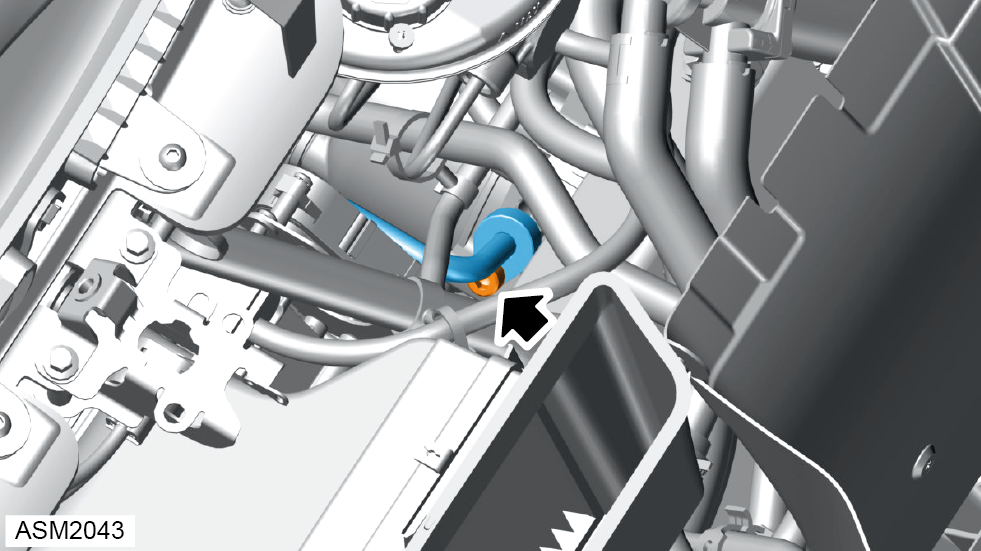
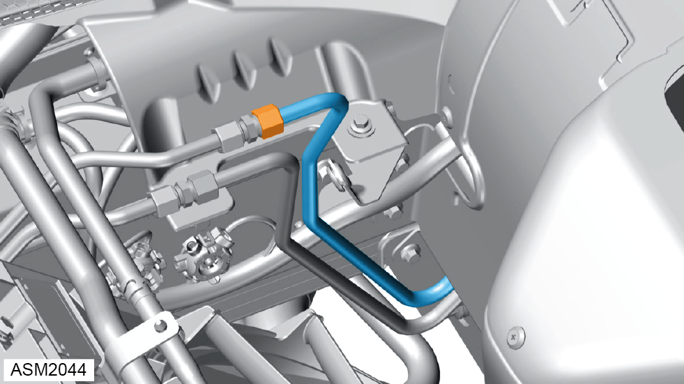
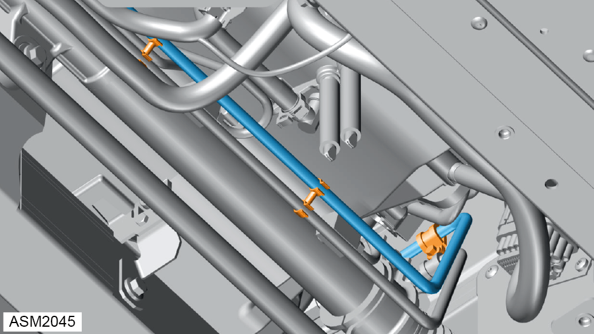

Pipe - Cooler to Pump - 4 Cylinder
Print
Operation Code: 32.03.15-02
Removal
- Remove radiator duct outlet left side. Refer to procedure.
- Remove radiator duct outlet right side.
NOTE: Procedure is the same as left side component.
- Remove scrivets (x3) securing HVAC air inlet to vehicle.
- Remove M5x12 screws and washers (x2) securing HVAC air inlet to filter lid.
- Remove HVAC air inlet.

- Remove M8x25 bolt securing cooler/pump pipe to pump. Torque 18 Nm.
- Disconnect cooler/pump pipe from pump and discard O-ring.

- Loosen union nut securing cooler/pump pipe to cooler pipe.
- Disconnect steering rack/cooler pipe from cooler pipe and discard O-ring.
- Remove front undertray. Refer to procedure.

- Remove M6x20 bolt securing cooler/pump pipe to front subframe. Torque 9 Nm.
- Release clips (x2) securing cooler/pump pipe to steering rack/cooler pipe.
- Remove cooler/pump pipe.
Installation
- Installation is the reverse of removal procedure except for the following:
- Renew discarded O-rings.
- Fill power steering system. Refer to technical data.
- Bleed power steering system. Refer to procedure.